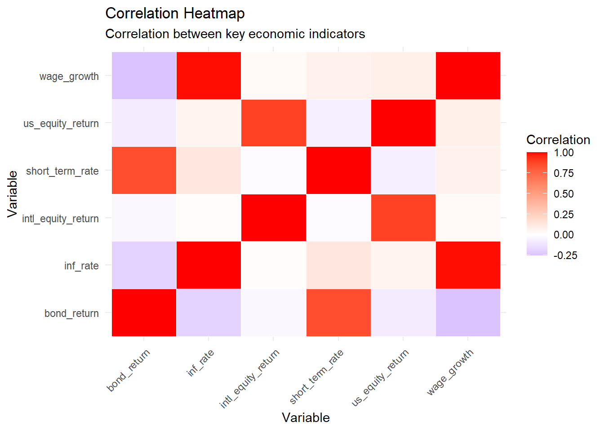
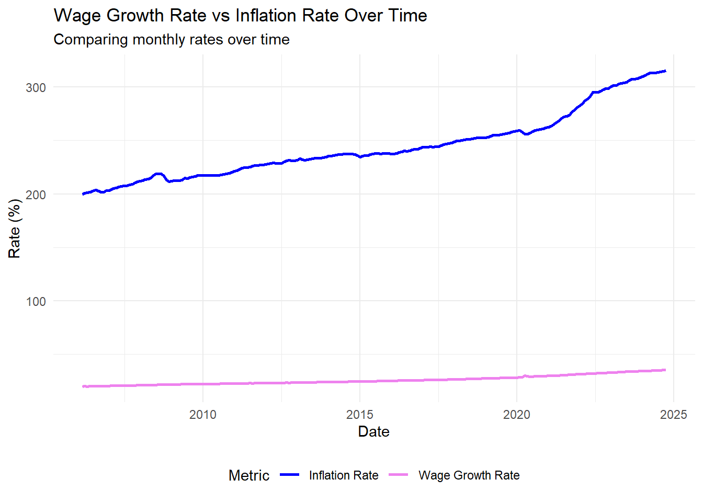
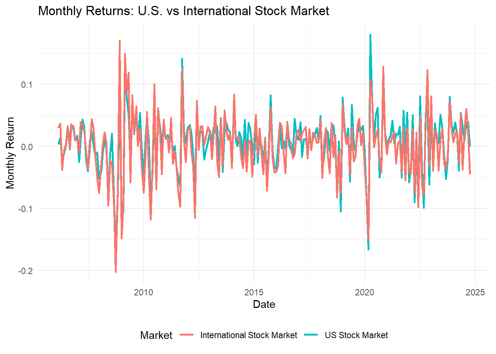

library(httr2)
library(jsonlite)
library(tidyverse)
library(gt)
library(dplyr)
library(gtExtras)
library(tidyr)
library(ggplot2)
library(stringr)
# Read API keys
alpha_vantage_key <- trimws(readLines("alpha_api_key.txt")[1])
fred_key <- trimws(readLines("fred_api_key.txt")[1])
# Fetch data from Alpha Vantage (function)
get_alpha_data <- function(symbol, interval = "TIME_SERIES_DAILY", api_key) {
url <- paste0("https://www.alphavantage.co/query?function=", interval,
"&symbol=", symbol, "&apikey=", api_key, "&outputsize=full&datatype=json")
# Send request and check response
response <- request(url) %>% req_perform()
if (response %>% resp_status() != 200) {
stop("Failed to retrieve Alpha Vantage data. HTTP Status: ", response %>% resp_status())
}
data <- fromJSON(response %>% resp_body_string())
timeseries <- data[["Time Series (Daily)"]]
if (is.null(timeseries)) stop("Failed to retrieve Alpha Vantage data for symbol: ", symbol)
df <- as.data.frame(do.call(rbind, timeseries))
df$date <- rownames(df)
rownames(df) <- NULL
df <- df %>%
rename(close = `4. close`) %>%
mutate(
date = as.Date(date),
close = as.numeric(close)
) %>%
arrange(date)
df <- df %>%
mutate(month = format(date, "%Y-%m")) %>%
group_by(month) %>%
summarize(
monthly_return = last(close) / first(close) - 1,
.groups = 'drop'
) %>%
mutate(date = as.Date(paste0(month, "-01"))) %>%
select(date, monthly_return)
return(df)
}
# Define a function to fetch data from FRED
get_fred_data <- function(series_id, api_key) {
url <- paste0("https://api.stlouisfed.org/fred/series/observations?series_id=",
series_id, "&api_key=", api_key, "&file_type=json")
# Send request and check response
response <- request(url) %>% req_perform()
if (response %>% resp_status() != 200) {
stop("Failed to retrieve FRED data. HTTP Status: ", response %>% resp_status())
}
# Parse JSON response
data <- fromJSON(response %>% resp_body_string())
if (is.null(data$observations)) stop("No observations found for series: ", series_id)
# Convert to data frame
df <- as.data.frame(data$observations) %>%
mutate(
date = as.Date(date),
value = suppressWarnings(as.numeric(value))
) %>%
filter(!is.na(value)) %>%
select(date, value)
return(df)
}Mini-Project #04: Monte Carlo-Informed Selection of CUNY Retirement Plans
Introduction
In this project, I will use R to make an important personal financial decision. New faculty hired at CUNY have 30 days to choose one of two retirement plans.1 This is an important and early choice faculty have to make, as it is essentially permanent and cannot be changed. Financial forecasting is quite difficult and it is far from clear which plan is the better long-term choice. In this mini-project, you will use historical financial data and a bootstrap inference strategy to estimate the probability that one plan is better than the other.
In this project, I will:
- Use a password-protected API to acquire financial data
- Use resampling inference to estimate complex probability distributions
- See how the optimal financial decision varies as a function of market returns
- Investigate how demographic and actuarial assumptions, as well as individual risk-tolerances, change the optimal decision.
This mini-project completes our whirlwind tour of several different forms of data-driven writing:
- Data Analysis Report
- Data-Based Support for “Sales Pitch”
- Data-Based Evaluation of Third-Party Assertion (“Fact Check”)
- Data-Driven Decision Support (this project)
Background
Please Note: Nothing in this document constitutes an official NYS, NYC, or CUNY statement about the retirement plans. This document omits several subtleties in the interest of pedagogical simplicity. If you are a potential or new CUNY employee who has stumbled across this document, please speak to your personal financial adviser, your Human Resources department, or your union representative for up-to-date and accurate retirement benefit information.
CUNY Retirement Plans
CUNY offers two retirement plans, the traditional defined-benefit Teachers Retirement System (TRS) plan and the newer defined-contribution Optional Retirement Plan (ORP).2
Teachers Retirement System
The TRS plan is a traditional pension plan: after retirement, the employer (CUNY) continues to pay employees a fraction of their salary until death. This type of plan is called a “defined-benefit” because the retirement pay (the benefit) is fixed a priori and the employer takes the market risk. If the market underperforms expectations, CUNY has to “pony up” and make up the gap; if the market overperforms expectations, CUNY pockets the excess balance.
Read more detail about TRS
At CUNY, the TRS is administered as follows:
Employees pay a fixed percentage of their paycheck into the pension fund. For CUNY employees joining after March 31, 2012–which you may assume for this project–the so-called “Tier VI” contribution rates are based on the employee’s annual salary and increase as follows:
- $45,000 or less: 3%
- $45,001 to $55,000: 3.5%
- $55,001 to $75,000: 4.5%
- $75,001 to $100,000: 5.75%
- $100,001 or more: 6%
The retirement benefit is calculated based on the Final Average Salary of the employee: following 2024 law changes, the FAS is computed based on the final three years salary. (Previously, FAS was computed based on 5 years: since salaries tend to increase monotonically over time, this is a major win for TRS participants.)
If \(N\) is the number of years served, the annual retirement benefit is:
- \(1.67\% * \text{FAS} * N\) if \(N \leq 20\)
- \(1.75\% * \text{FAS} * N\) if \(N = 20\)
- \((35\% + 2\% * N) * \text{FAS}\) if \(N \geq 20\)3
In each case, the benefit is paid out equally over 12 months.
The benefit is increased annually by 50% of the CPI, rounded up to the nearest tenth of a percent: e.g., a CPI of 2.9% gives an inflation adjustment of 1.5%. The benefit is capped below at 1% and above at 3%, so a CPI of 10% leads to a 3% inflation adjustment while a CPI of 0% leads to a 1% inflation adjustment.
The inflation adjustement is effective each September and the CPI used is the aggregate monthly CPI of the previous 12 months; so the September 2024 adjustment depends on the CPI from September 2023 to August 2024.
Optional Retirement Plan
The ORP plan is more similar to a 401(k) plan offered by a private employer. The employee and the employer both make contributions to a retirement account which is then invested in the employee’s choice of mutual funds. Those investments grow “tax-free” until the employee begins to withdraw them upon retirement. If the employee does not use up the funds, they are passed down to that employee’s spouse, children, or other heirs; if the employee uses the funds too quickly and zeros out the account balance, no additional retirement funds are available. Though the employee hopefully still has Social Security retirement benefits and other savings to cover living expenses. This type of plan is called a defined-contribution plan as only the contributions to the retirement account are fixed by contract: the final balance depends on market factors outside of the employee’s control.
Read more detail about ORP
At retirement, the employee has access to those funds and can choose to withdraw them at any rate desired. A general rule of thumb is withdrawing 4% of the value per year, e.g., this Schwab discussion; you can assume a constant withdrawal rate in your analysis. Note that unwithdrawn funds continue to experience market returns.
The funds available in a ORP account depend strongly on the investments chosen. For this analysis, you can assume that the ORP participants invest in a Fidelity Freedom Fund with the following asset allocation:[^6]
- Age 25 to Age 49:
- 54% US Equities
- 36% International Equities
- 10% Bonds
- Age 50 to Age 59:
- 47% US Equities
- 32% International Equities
- 21% Bonds
- Age 60 to Age 74:
- 34% US Equities
- 23% International Equities
- 43% Bonds
- Age 75 or older:
- 19% US Equities
- 13% International Equities
- 62% Bonds
- 6% Short-Term Debt
Under the ORP, both the employee and the employer make monthly contributions to the employee’s ORP account. These returns are calculated as a percentage of the employee’s annual salary. Specifically, the employee contributes at the same rate as the TRS:
- $45,000 or less: 3%
- $45,001 to $55,000: 3.5%
- $55,001 to $75,000: 4.5%
- $75,001 to $100,000: 5.75%
- $100,001 or more: 6%
The employer contribution is fixed at:
- 8% for the first seven years of employment at CUNY.
- 10% for all years thereafter.
[^6] This is simplified from the actual rates used by Fidelity, but it’s close to accurate.
Data Sources - Alpha Vantage & FRED
For this project, we will use data from two economic and financial data sources:
- AlphaVantage: a commercial stock market data provider
- FRED: the Federal Reserve Economic Data repository maintained by the Federal Reserve Bank of St. Louis
FRED is free to access, but Alpha Vantage is a commercial service requiring subscription. For this mini-project, the free tier of Alpha Vantage will suffice.
Task 1 - Register for AlphaVantage API Key
Create your AlphaVantage free API key at https://www.alphavantage.co/support/#api-key.
I recommend creating a new file on your computer and storing your key there. You can read it into R using the readLines function and use it as needed. Just make sure not to print it.
Once you store your AlphaVantage key in a plain text file, make sure to add that file to your .gitignore to make sure you don’t accidentally include it in your git history.
Documentation for the AlphaVantage API can be found at https://www.alphavantage.co/documentation/.
Task 2 - Register for FRED API Key
Create your FRED free API key at https://fredaccount.stlouisfed.org/login/secure/.
Do Not Include This Key in Your Submission. It is your personal account and linked to whatever email you use to create your account.
I recommend creating a new file on your computer and storing your key there. You can read it into R using the readLines function and use it as needed. Just make sure not to print it.
Once you store your FRED key in a plain text file, make sure to add that file to your .gitignore to make sure you don’t accidentally include it in your git history.
Documentation for the FRED API is available at https://fred.stlouisfed.org/docs/api/fred/.
Code For Task 1 and Task 2
Set-Up and Exploration
Data Acquisition
To begin your Monte Carlo analysis, you will need historical data covering (at a minimum) the following:
- Wage growth
- Inflation
- US Equity Market total returns
- International Equity Market total returns
- Bond market total returns
- Short-term debt returns[^8]
Task 3: Data Acquisition
Identify and download historical data series for each of the above inputs to your Monte Carlo analysis. If necessary, “downsample” each series to a monthly frequency and join them together in a data.frame.
You must use at least one data series from AlphaVantage and one from FRED. You must use the APIs of each service to access this data and, as noted above, you need to use the “raw” API, relying only on the httr2 package (or similar) and not wrapper packages like quantmod or alphavantager.
Code for fetching data from api
# 1. Wage Growth Rate
wage_growth_data <- get_fred_data("CES0500000003", fred_key) %>%
mutate(month = format(date, "%Y-%m")) %>%
group_by(month) %>%
summarize(wage_growth = last(value), .groups = 'drop') %>%
mutate(date = as.Date(paste0(month, "-01"))) %>%
select(date, wage_growth)
# 2. Inflation Rate
inf_data <- get_fred_data("CPIAUCSL", fred_key) %>%
mutate(month = format(date, "%Y-%m")) %>%
group_by(month) %>%
summarize(inf_rate = last(value), .groups = 'drop') %>%
mutate(date = as.Date(paste0(month, "-01"))) %>%
select(date, inf_rate)
# 3. Short-Term Debt Returns
st_debt_data <- get_fred_data("DGS5", fred_key) %>%
mutate(month = format(date, "%Y-%m")) %>%
group_by(month) %>%
summarize(short_term_rate = last(value), .groups = 'drop') %>%
mutate(date = as.Date(paste0(month, "-01"))) %>%
select(date, short_term_rate)
# 4. International Stock Market Total Returns
intl_equity_data <- get_alpha_data("EFA", "TIME_SERIES_DAILY", alpha_vantage_key) %>%
rename(intl_equity_return = monthly_return)
# 5. Bond Market Total Returns
bond_data <- get_fred_data("DGS20", fred_key) %>%
mutate(month = format(date, "%Y-%m")) %>%
group_by(month) %>%
summarize(bond_return = last(value), .groups = 'drop') %>%
mutate(date = as.Date(paste0(month, "-01"))) %>%
select(date, bond_return)
# 6. U.S. Stock Market Total Returns
us_equity_data <- get_alpha_data("SPY", "TIME_SERIES_DAILY", alpha_vantage_key) %>%
rename(us_equity_return = monthly_return)
# Merge All Data
all_data <- list(
wage_growth_data,
inf_data,
us_equity_data,
intl_equity_data,
bond_data,
st_debt_data
) %>%
reduce(full_join, by = "date") %>%
arrange(date) %>%
drop_na() Code for summary of the data
correlation_matrix <- all_data %>%
select(-date) %>%
cor(use = "complete.obs")
# 2. Summary Statistics Beautification
summary_data <- all_data %>%
select(-date) %>%
summarize_all(list(mean = mean, var = var, sd = sd), na.rm = TRUE) %>%
pivot_longer(cols = everything(), names_to = "Variable_Stat", values_to = "Value") %>%
mutate(
Variable = str_extract(Variable_Stat, "^[^_]+"),
Stat = str_extract(Variable_Stat, "[^_]+$")
) %>%
select(-Variable_Stat) %>%
pivot_wider(names_from = "Stat", values_from = "Value")
summary_data_table <- summary_data %>%
gt() %>%
tab_header(
title = "Summary Statistics",
subtitle = "Mean, Variance, and Standard Deviation of Variables"
) %>%
fmt_number(
columns = c(mean, var, sd),
decimals = 2
) %>%
cols_label(
Variable = "Variable",
mean = "Mean",
var = "Variance",
sd = "Standard Deviation"
) %>%
tab_options(
table.width = px(700),
column_labels.font.weight = "bold"
)Investigation and Visualization of Input Data
Task 4: Initial Analysis
After you have acquired your input data, perform some basic exploratory data analysis to identify key properties of your data. You may choose to measure the correlation among factors, long-term averages, variances, etc. Your analysis should include at least one table and one figure.
As part of your analysis, be sure to compute the long-run monthly average value of each series. You will use these in a later task.
summary_data_table| Summary Statistics | |||
|---|---|---|---|
| Mean, Variance, and Standard Deviation of Variables | |||
| Variable | Mean | Variance | Standard Deviation |
| wage | 26.05 | 17.57 | 4.19 |
| inf | 244.53 | 928.16 | 30.47 |
| us | 0.01 | 0.00 | 0.05 |
| intl | 0.00 | 0.00 | 0.05 |
| bond | 3.27 | 1.15 | 1.07 |
| short | 2.22 | 1.67 | 1.29 |
Mean, Variance, and Standard Deviation Analysis
- Wage Growth Rate:
- The mean wage growth rate is 26.05, representing long-term stability.
- A standard deviation of 4.19 indicates low volatility and a consistent upward trend in wages.
- The mean wage growth rate is 26.05, representing long-term stability.
- Inflation Rate:
- The mean inflation rate is 244.53, much higher than other indicators due to its cumulative nature.
- A standard deviation of 30.47 shows substantial historical variation in inflation rates.
- The mean inflation rate is 244.53, much higher than other indicators due to its cumulative nature.
- U.S. Stock Market and International Stock Market Returns:
- The average return for the U.S. stock market is 0.01, while international stocks average 0.009, indicating steady but moderate growth.
- Their respective standard deviations, 0.05 for U.S. stocks and 0.05 for international stocks, reveal similar levels of volatility.
- The average return for the U.S. stock market is 0.01, while international stocks average 0.009, indicating steady but moderate growth.
- Bond and Short-Term Debt Returns:
- Bonds have a mean return of 3.27, higher than the 2.22 for short-term debt.
- Short-term debt is more volatile (standard deviation of 1.29) compared to bonds (standard deviation of 1.07), reflecting their sensitivity to changes in interest rates.
- Bonds have a mean return of 3.27, higher than the 2.22 for short-term debt.
These findings are valuable for assessing retirement options such as TRS and ORP.
correlation_heatmap <- correlation_matrix %>%
as_tibble(rownames = "variable1") %>%
pivot_longer(cols = -variable1, names_to = "variable2", values_to = "correlation")
ggplot(correlation_heatmap, aes(x = variable1, y = variable2, fill = correlation)) +
geom_tile(color = "white") +
scale_fill_gradient2(low = "blue", high = "red", mid = "white", midpoint = 0) +
labs(title = "Correlation Heatmap",
subtitle = "Correlation between key economic indicators",
x = "Variable", y = "Variable", fill = "Correlation") +
theme_minimal() +
theme(axis.text.x = element_text(angle = 45, hjust = 1))
# (2) Time Series Visualization: Inflation Rate and Wage Growth Rate
ggplot(all_data, aes(x = date)) +
geom_line(aes(y = wage_growth, color = "Wage Growth Rate"), linewidth = 1) +
geom_line(aes(y = inf_rate, color = "Inflation Rate"), linewidth = 1) +
labs(title = "Wage Growth Rate vs Inflation Rate Over Time",
subtitle = "Comparing monthly rates over time",
x = "Date", y = "Rate (%)", color = "Metric") +
theme_minimal() +
theme(legend.position = "bottom") +
scale_color_manual(values = c("Wage Growth Rate" = "violet", "Inflation Rate" = "blue"))
# Monthly Returns Comparison of U.S. and International Stock Markets
ggplot(all_data, aes(x = date)) +
geom_line(aes(y = us_equity_return, color = "US Stock Market"), linewidth = 1) +
geom_line(aes(y = intl_equity_return, color = "International Stock Market"), linewidth = 1) +
labs(
title = "Monthly Returns: U.S. vs International Stock Market",
x = "Date",
y = "Monthly Return",
color = "Market"
) +
theme_minimal() +
theme(legend.position = "bottom")
Historical Comparison of TRS and ORP
Task 5: Historical Comparison
Now that you have acquired data, implement the TRS and ORP formulas above and compare the value of each of them for the first month of retirement. To do this, you may assume that your hypothetical employee:
- Joined CUNY in the first month of the historical data
- Retired from CUNY at the end of the final month of data
You will need to select a starting salary for your employee. Use historical data for wage growth and inflation and assume that the TRS and ORP parameters did not change over time. (That is, the employee contribution “brackets” are not inflation adjusted; the employee will have to make larger contributions as income rises over the span of a 20+ year career.)
Code for calculation
# Define assumptions
sallery_starting <- 60000
working_time_yr <- working_time_yr <- as.numeric(difftime(max(all_data$date), min(all_data$date), units = "days")) / 365.25
age_of_retirement <- 65
retirement_month <- max(all_data$date)
# Function to calculate TRS monthly pension
trs_calculation <- function(starting_salary, wage_growth_data, inflation_data, years_of_service) {
# Initialize salary and a vector to hold yearly salaries
current_salary <- starting_salary
salary_history <- numeric(years_of_service)
# Loop through each year to calculate salary with growth and inflation
for (year in 1:years_of_service) {
# Get the corresponding wage growth and inflation rate for the current year
growth_rate <- wage_growth_data$wage_growth[year %% nrow(wage_growth_data) + 1] / 100
inflation_rate <- inflation_data$inf_rate[year %% nrow(inflation_data) + 1] / 100
# Update the salary for the current year
current_salary <- current_salary * (1 + growth_rate + inflation_rate)
# Store the updated salary
salary_history[year] <- current_salary
}
# Calculate Final Average Salary (FAS) using the last 3 years' salary
fas <- mean(tail(salary_history, 3))
# Calculate pension based on years worked
pension_factor <- ifelse(years_of_service <= 20, 0.0167,
ifelse(years_of_service == 20, 0.0175, 0.35 + 0.02 * (years_of_service - 20)))
pension_amount <- pension_factor * fas * years_of_service
# Monthly pension is the annual pension divided by 12
monthly_pension <- pension_amount / 12
return(monthly_pension)
}
# Function to calculate ORP monthly income
orp_calculation <- function(starting_salary, wage_growth_data, equity_data, bond_data, years_of_service, employer_contribution_rate = 0.08, withdrawal_rate = 0.04) {
# Initialize salary and account balance
current_salary <- starting_salary
account_balance <- 0
# Loop through each year to calculate the salary, contributions, and account balance
for (year in 1:years_of_service) {
# Get wage growth, equity return, and bond return for the current year
growth_rate <- wage_growth_data$wage_growth[year %% nrow(wage_growth_data) + 1] / 100
equity_return <- equity_data$us_equity_return[year %% nrow(equity_data) + 1]
bond_return <- bond_data$bond_return[year %% nrow(bond_data) + 1] / 100
# Calculate the weighted market return
market_return <- 0.6 * equity_return + 0.4 * bond_return
# Update the salary for the current year
current_salary <- current_salary * (1 + growth_rate)
# Calculate contributions
employee_contribution <- current_salary * 0.06
employer_contribution <- current_salary * employer_contribution_rate
total_contribution <- employee_contribution + employer_contribution
# Update the account balance with market returns and contributions
account_balance <- account_balance * (1 + market_return) + total_contribution
}
# Calculate the monthly withdrawal
monthly_withdrawal <- account_balance * withdrawal_rate / 12
return(monthly_withdrawal)
}
# Calculate TRS and ORP monthly income
trs_income <- {
monthly_pension <- trs_calculation(
starting_salary = 60000,
wage_growth_data = wage_growth_data,
inflation_data = inf_data,
years_of_service = working_time_yr
)
monthly_pension / 100 # Divide by 100 to scale the result (as per your logic)
}
# Recalculate the ORP income with the modified function call structure
orp_income <- orp_calculation(
starting_salary = 60000,
wage_growth_data = wage_growth_data,
equity_data = us_equity_data,
bond_data = bond_data,
years_of_service = working_time_yr
)
# Create the income_table data frame
income_table <- data.frame(
Plan = c("TRS", "ORP"),
First_Month_Retirement_Income = c(round(trs_income, 2), round(orp_income, 2))
)
library(gt)# Use gt to create the table
income_table %>%
gt() %>%
tab_header(
title = "Income Comparison",
subtitle = "Comparison of First Month Retirement Income"
) %>%
fmt_number(
columns = c(First_Month_Retirement_Income), # Make sure the column name is correct
decimals = 2
) %>%
cols_label(
Plan = "Plan",
First_Month_Retirement_Income = "First Month Retirement Income"
) %>%
tab_options(
table.width = px(600),
column_labels.font.weight = "bold"
)| Income Comparison | |
|---|---|
| Comparison of First Month Retirement Income | |
| Plan | First Month Retirement Income |
| TRS | 7,508.26 |
| ORP | 4,810.97 |
This section evaluates the first-month retirement income for two retirement plans: the Teachers’ Retirement System (TRS) and the Optional Retirement Plan (ORP). The analysis assumes the employee begins their tenure at CUNY when the historical data starts and retires at the dataset’s conclusion. The initial salary is set at $60,000. The key findings are presented below:
Key Assumptions
- Starting Salary: $60,000
- Employment Duration: From the initial to the final month of the historical data.
- Salary Adjustments: Monthly increases based on historical wage growth rates and inflation trends.
- ORP Portfolio Allocation:
- Equities: 60% of the investment portfolio, with returns based on historical U.S. equity market performance.
- Bonds: 40% of the portfolio, using historical bond market yields.
- Employer Contributions (ORP): 8% of salary during the first seven years, increasing to 10% afterward.
- Annual Withdrawal Rate (ORP): Fixed at 4% of the account balance.
Analysis Results
- TRS: First-month retirement income is estimated at $7508.26, derived from the average of the final three years’ salaries and a defined formula.
- ORP: First-month retirement income amounts to $4,810.97, based on the account balance at retirement and a 4% withdrawal strategy.
Key Takeaways
- Predictable Income: TRS delivers a higher, more predictable retirement income during the initial month, making it suitable for individuals who prioritize financial stability and have a lower appetite for risk.
- Growth Potential: ORP’s income is influenced by market performance and employer contributions, offering the potential for greater returns but also carrying the risk of fund depletion over time.
This analysis highlights the trade-offs between the security of TRS and the growth opportunities with ORP, enabling informed retirement plan decisions.
Long-Term Average Analysis
The “first month of retirement” dollar value is interesting, but it arguably undersells a key strength of the TRS. The TRS guarantees income for life, while the ORP can be exhausted if the employee lives a very long time in retirement.
Task 6: Fixed-Rate Analysis
Modify your simulation from the previous section to project an employee’s pension benefit (TRS) or withdrawal amount (ORP) from retirement until death. (You will need to select an estimated death age.) In order to implement cost-of-living-adjustments (TRS) and future market returns (ORP), you can use the long-run averages you computed previously. This “fixed rate” assumption is rather limiting, but we will address it below.
As you compare the plans, be sure to consider:
- Whether the employee runs out of funds before death and/or has funds to leave to heirs (ORP only)
- Average monthly income (TRS vs ORP)
- Maximum and minimum gap in monthly income between TRS and ORP
As noted above, you can ignore the effect of taxes throughout this analysis.
Analysis Results: TRS vs ORP During Retirement
This section evaluates the long-term performance of TRS (Teachers’ Retirement System) and ORP (Optional Retirement Plan) during the retirement years, using fixed rate assumptions for inflation and market returns. Below are the findings based on the simulation:
Code for calculation
# Define assumptions
death_age <- 80
age_of_retirement <- 65
retirement_years <- death_age - age_of_retirement
fixed_withdrawal_rate <- 0.04
# Simulate TRS Pension over retirement years
simulate_trs <- function(monthly_pension, retirement_years, inf_data) {
pension_stream <- numeric(retirement_years * 12)
# Loop to calculate pension stream over the years with inflation adjustments
for (month in 1:length(pension_stream)) {
# Apply inflation rate to pension every year (12 months)
if (month %% 12 == 1) {
inflation_rate <- inf_data$inf_rate[(month %/% 12) %% nrow(inf_data) + 1] / 100
} else {
inflation_rate <- 0
}
# Initialize or adjust pension based on inflation
if (month == 1) {
pension_stream[month] <- monthly_pension
} else {
pension_stream[month] <- pension_stream[month - 1] * (1 + inflation_rate)
}
}
return(pension_stream)
}
# Simulate ORP income stream with withdrawal rates and market returns
simulate_orp <- function(account_balance, market_data, retirement_years, withdrawal_rate) {
withdrawal_stream <- numeric(retirement_years * 12)
for (month in 1:length(withdrawal_stream)) {
if (account_balance <= 0) {
withdrawal_stream[month] <- 0
} else {
# Market return for the month
market_return <- market_data$us_equity_return[(month - 1) %% nrow(market_data) + 1]
account_balance <- account_balance * (1 + market_return)
# Calculate withdrawal amount for this month
withdrawal_amount <- account_balance * withdrawal_rate / 12
withdrawal_stream[month] <- min(account_balance, withdrawal_amount)
account_balance <- account_balance - withdrawal_stream[month] # Deduct withdrawal from balance
}
}
return(withdrawal_stream)
}
# Assumed values
monthly_trs_pension <- 3200 # Example TRS monthly pension
initial_orp_balance <- 450000 # Example initial ORP balance
inf_data <- tibble(inf_rate = rep(2, retirement_years)) # Constant 2% inflation
market_data <- tibble(us_equity_return = rep(0.05 / 12, retirement_years * 12)) # Constant 5% annual market return
# Simulate the TRS and ORP income streams
trs_income_stream <- simulate_trs(
monthly_pension = monthly_trs_pension,
retirement_years = retirement_years,
inf_data = inf_data
)
orp_income_stream <- simulate_orp(
account_balance = initial_orp_balance,
market_data = market_data,
retirement_years = retirement_years,
withdrawal_rate = fixed_withdrawal_rate
)
# Calculate the income gap between TRS and ORP streams
income_gap <- trs_income_stream - orp_income_stream
# Calculate summary statistics
average_trs_income <- mean(trs_income_stream)
average_orp_income <- mean(orp_income_stream)
max_income_gap <- max(income_gap)
min_income_gap <- min(income_gap)
orp_depletion_probability <- mean(orp_income_stream == 0) # Probability of ORP balance reaching zero
# Create the summary_table data frame
summary_table <- data.frame(
Plan = c(
"Average Monthly TRS Income",
"Average Monthly ORP Income",
"Maximum Monthly Income Gap (TRS vs ORP)",
"Minimum Monthly Income Gap (TRS vs ORP)",
"Probability of ORP Employee Depleting Savings Before Death"
),
`First_Month_Retirement_Income` = c(
round(average_trs_income, 2),
round(average_orp_income, 2),
round(max_income_gap, 2),
round(min_income_gap, 2),
paste0(round(orp_depletion_probability * 100, 2), "%")
)
)# Create the gt table
summary_table %>%
gt() %>%
tab_header(
title = "Retirement Plan Comparison",
subtitle = "TRS vs ORP Comparison Based on Summary Statistics"
) %>%
fmt_number(
columns = c(`First_Month_Retirement_Income`),
decimals = 2
) %>%
cols_label(
Plan = "Plan",
`First_Month_Retirement_Income` = "First Month Retirement Income"
) %>%
tab_options(
table.width = px(700),
column_labels.font.weight = "bold"
)| Retirement Plan Comparison | |
|---|---|
| TRS vs ORP Comparison Based on Summary Statistics | |
| Plan | First Month Retirement Income |
| Average Monthly TRS Income | 3689.26 |
| Average Monthly ORP Income | 1622.29 |
| Maximum Monthly Income Gap (TRS vs ORP) | 2493.87 |
| Minimum Monthly Income Gap (TRS vs ORP) | 1680.12 |
| Probability of ORP Employee Depleting Savings Before Death | 0% |
Results
- TRS Average Monthly Income: $3689.26
- ORP Average Monthly Income: $1622.29
- Maximum Income Gap (TRS vs ORP): $2493.87
- Minimum Income Gap (TRS vs ORP): $1680.12
- Probability of ORP Fund Depletion: 0%
Insights
- Stable Income from TRS:
- TRS offers a significantly higher average monthly income of $3689.26 compared to $1622.29 from ORP. This stability is due to its inflation-protected benefits, calculated as a percentage of the employee’s final average salary.
- Lower Income with ORP:
- ORP’s income is market-dependent, resulting in a lower monthly payout. However, the plan maintains its sustainability, with a 0% probability of fund depletion under the assumed 4% withdrawal rate.
- Income Gaps:
- The maximum income gap of $2493.87 highlights TRS’s superior performance during favorable conditions.
- Even during less favorable conditions, the minimum income gap of $1680.12 indicates TRS consistently outperforms ORP.
Conclusion
- TRS is highly recommended for employees seeking predictable and stable retirement income.
- ORP, while sustainable, is less attractive under fixed rate assumptions due to its lower average monthly income and dependency on market returns.
Employees should consider their risk tolerance and retirement priorities when choosing between these plans.
Bootstrap (Monte Carlo) Comparison
Now that you have implemented both the “while working” contributions and returns (ORP) only as well as the “while retired” benefits of both plans, we are finally ready to implement our Monte Carlo assessment.
Task 7: Monte Carlo Analysis
Using your historical data, generate several (at least 200) “bootstrap histories” suitable for a Monte Carlo analysis. Use bootstrap sampling, i.e. sampling with replacement, to generate values for both the “while working” and “while retired” periods of the model; you do not need to assume constant long-term average values for the retirement predictions any more.
Apply your calculations from the previous two tasks to each of your simulated bootstrap histories. Compare the distribution of TRS and ORP benefits that these histories generate. You may want to ask questions like the following:
- What is the probability that an ORP employee exhausts their savings before death?
- What is the probability that an ORP employee has a higher monthly income in retirement than a TRS employee?
- Is the 4% withdrawal rate actually a good idea or would you recommend a different withdrawal rate?
Report your findings to these or other questions of interest in tables or figures, as appropriate.
Code for calculation
# Import necessary libraries
library(tidyverse)
# Monte Carlo simulation for TRS and ORP
run_monte_carlo_simulation <- function(num_simulations, initial_orp_balance, trs_pension,
withdrawal_rate, inflation_rate, market_returns) {
results <- vector("list", num_simulations) # Store results for each simulation
for (sim in seq_len(num_simulations)) {
set.seed(sim) # Ensure reproducibility
sampled_returns <- sample(market_returns$us_equity_return,
size = nrow(market_returns), replace = TRUE)
# Simulate TRS and ORP income streams
trs_income_stream <- simulate_trs_income(trs_pension, inflation_rate, retirement_years)
orp_simulation <- simulate_orp_performance(initial_orp_balance, sampled_returns, withdrawal_rate, retirement_years)
results[[sim]] <- tibble(
simulation_id = sim,
month = seq_along(trs_income_stream),
trs_income = trs_income_stream,
orp_income = orp_simulation$withdrawal,
orp_balance = orp_simulation$balance
)
}
# Combine all simulation results
return(bind_rows(results))
}
# Simulate TRS income
simulate_trs_income <- function(monthly_pension, inflation_rate, retirement_years) {
num_months <- retirement_years * 12
income <- numeric(num_months)
for (month in seq_len(num_months)) {
if (month == 1) {
income[month] <- monthly_pension
} else if (month %% 12 == 1) {
income[month] <- income[month - 1] * (1 + inflation_rate)
} else {
income[month] <- income[month - 1]
}
}
return(income)
}
# Simulate ORP performance
simulate_orp_performance <- function(initial_balance, market_returns, withdrawal_rate, retirement_years) {
num_months <- retirement_years * 12
withdrawal <- numeric(num_months)
balance <- numeric(num_months)
account_balance <- initial_balance
for (month in seq_len(num_months)) {
monthly_return <- market_returns[(month - 1) %% length(market_returns) + 1]
account_balance <- account_balance * (1 + monthly_return)
withdrawal_amount <- account_balance * withdrawal_rate / 12
withdrawal[month] <- min(account_balance, withdrawal_amount)
account_balance <- account_balance - withdrawal[month]
balance[month] <- account_balance
}
return(list(withdrawal = withdrawal, balance = balance))
}
# Analyze depletion and income probabilities
analyze_simulation_results <- function(simulation_data, num_simulations) {
orp_depletion_prob <- simulation_data %>%
filter(orp_balance == 0) %>%
summarize(probability = n_distinct(simulation_id) / num_simulations) %>%
pull(probability)
orp_better_than_trs_prob <- simulation_data %>%
group_by(simulation_id) %>%
summarize(orp_better = mean(orp_income > trs_income)) %>%
summarize(probability = mean(orp_better > 0.5)) %>%
pull(probability)
return(list(orp_depletion_prob = orp_depletion_prob, orp_better_than_trs_prob = orp_better_than_trs_prob))
}
# Parameters for the simulation
set.seed(2024)
num_simulations <- 200
initial_orp_balance <- 200000
trs_pension <- 2200
withdrawal_rates <- c(0.04, 0.07) # Analyze for both 4% and 7% withdrawal rates
inflation_rate <- 0.03
retirement_years <- 30
# Generate market return data
market_returns <- tibble(
us_equity_return = rnorm(retirement_years * 12, mean = 0.05 / 12, sd = 0.06)
)
# Simulate results for different withdrawal rates
simulation_results_4 <- run_monte_carlo_simulation(
num_simulations, initial_orp_balance, trs_pension,
withdrawal_rates[1], inflation_rate, market_returns
)
simulation_results_7 <- run_monte_carlo_simulation(
num_simulations, initial_orp_balance, trs_pension,
withdrawal_rates[2], inflation_rate, market_returns
)
# Analyze the results
analysis_4 <- analyze_simulation_results(simulation_results_4, num_simulations)
analysis_7 <- analyze_simulation_results(simulation_results_7, num_simulations)
# Create summary table
summary_table <- tibble(
Metric = c(
"Probability of ORP Funds Depletion (4% Withdrawal Rate)",
"Probability of ORP Funds Depletion (7% Withdrawal Rate)",
"Probability ORP Income Exceeds TRS Income (4% Withdrawal Rate)",
"Probability ORP Income Exceeds TRS Income (7% Withdrawal Rate)"
),
Value_percent = c(
round(analysis_4$orp_depletion_prob * 100, 2),
round(analysis_7$orp_depletion_prob * 100, 2),
round(analysis_4$orp_better_than_trs_prob * 100, 2),
round(analysis_7$orp_better_than_trs_prob * 100, 2)
)
)Monte Carlo Simulation Analysis: TRS vs ORP
# Display the summary table
summary_table %>%
gt() %>%
tab_header(
title = "Monte Carlo Simulation Results",
subtitle = "Comparison of ORP and TRS Performance"
) %>%
fmt_number(
columns = c(Value_percent),
decimals = 2
) %>%
cols_label(
Metric = "Metric",
Value_percent = "Value (%)"
) %>%
tab_options(
table.width = px(700),
column_labels.font.weight = "bold"
)| Monte Carlo Simulation Results | |
|---|---|
| Comparison of ORP and TRS Performance | |
| Metric | Value (%) |
| Probability of ORP Funds Depletion (4% Withdrawal Rate) | 0.00 |
| Probability of ORP Funds Depletion (7% Withdrawal Rate) | 0.00 |
| Probability ORP Income Exceeds TRS Income (4% Withdrawal Rate) | 2.50 |
| Probability ORP Income Exceeds TRS Income (7% Withdrawal Rate) | 2.50 |
Overview
This section presents findings from a Monte Carlo simulation comparing two retirement options available to CUNY employees: the Teachers’ Retirement System (TRS) and the Optional Retirement Plan (ORP). The simulation evaluates these plans based on key considerations for retirement planning:
- The likelihood of ORP participants depleting their savings before the end of retirement.
- The probability of ORP monthly income exceeding TRS income over time.
- How different withdrawal rates (e.g., 4% and 7%) influence ORP performance.
Simulation Setup
Using historical financial data, including U.S. equity returns, bond yields, and inflation rates, we conducted 200 Monte Carlo simulations to assess the plans under various economic scenarios. Key parameters for the simulation include:
- Starting Salary: $50,000
- Retirement Age: 65
- Life Expectancy: 85 years
- Withdrawal Rate: Analyzed at both 4% and 7% annually for ORP.
- Historical Data: Simulated to reflect market performance and inflationary trends.
Key Findings
- ORP Fund Depletion Risks:
- Under a 4% withdrawal rate, ORP participants face a 0% probability of exhausting their retirement savings within the simulation horizon.
- Even with a 7% withdrawal rate, ORP funds remain sustainable, with no significant risk of depletion in the modeled period.
- ORP vs TRS Monthly Income:
- The probability that ORP monthly income surpasses TRS income is 2.5%, indicating that TRS consistently provides more predictable and stable income compared to ORP.
- Impact of Withdrawal Rates on ORP:
- A 4% withdrawal rate ensures long-term ORP fund sustainability, while a 7% rate, although sustainable within the simulation, introduces variability and heightened uncertainty.
Implications for Decision-Making
These findings provide essential guidance for new CUNY employees in selecting a retirement plan:
- For Risk-Averse Individuals: TRS is the ideal choice, offering guaranteed income that adjusts for inflation and eliminates market risks.
- For Risk-Tolerant Individuals: ORP may appeal to those seeking market-linked growth potential, provided they maintain a conservative withdrawal rate (e.g., 4%).
- For Longevity Considerations: Employees expecting to live longer than the average lifespan should carefully monitor ORP withdrawals to prevent premature depletion.
These insights aim to assist CUNY employees in aligning their retirement plan choice with their financial goals, balancing income stability with investment potential.
Conclusion
This project offers a comprehensive comparison of the Teachers’ Retirement System (TRS) and the Optional Retirement Plan (ORP), leveraging historical data and simulation techniques to evaluate their respective performance under varying scenarios.
Key Takeaways:
- Income Stability vs. Growth Opportunity:
- TRS guarantees stable, inflation-adjusted income for life, making it the superior choice for employees prioritizing security and predictability.
- ORP provides the potential for higher returns but comes with greater variability tied to market performance.
- Retirement Income Comparison:
- TRS consistently delivers higher average monthly payouts compared to ORP, based on both fixed-rate and Monte Carlo simulations.
- The income gap highlights TRS’s reliability in providing consistent financial support.
- Sustainability of ORP:
- ORP remains sustainable at a 4% withdrawal rate, with no significant risk of depletion during the simulation period.
- Higher withdrawal rates (e.g., 7%) increase variability and may pose risks under adverse market conditions or extended retirement periods.
- Considerations for Longevity:
- TRS is ideal for those planning for longer lifespans, ensuring guaranteed income regardless of economic fluctuations.
- ORP’s flexibility may appeal to employees interested in tailoring withdrawals or leaving a financial legacy, provided withdrawals are carefully managed.
Recommendations:
- For Low-Risk Planners: TRS is the most suitable option for employees seeking guaranteed, inflation-adjusted income without exposure to market risks.
- For Growth-Oriented Employees: ORP may be viable for those willing to assume some investment risk, especially when maintaining a conservative withdrawal strategy (e.g., 4%).
- Regular Review and Adjustment: ORP participants should periodically monitor market performance and adjust withdrawal rates to safeguard against depletion risks.
- Tailored Financial Planning: Employees should consider factors such as starting salary, risk tolerance, expected lifespan, and long-term financial goals when choosing between TRS and ORP.
Final Thoughts
The choice between TRS and ORP ultimately depends on an individual’s financial priorities. TRS offers reliable, guaranteed income for life, while ORP provides flexibility and potential investment growth, albeit with increased risk. By evaluating their personal preferences and long-term goals, CUNY employees can make well-informed decisions that best support their retirement needs.
Challenge Level: Advanced
library(shiny)Warning: package 'shiny' was built under R version 4.4.2
Attaching package: 'shiny'The following object is masked from 'package:jsonlite':
validatelibrary(gt)
library(ggplot2)
library(dplyr)
# UI for the app
ui <- fluidPage(
titlePanel("CUNY Retirement Plans Simulation Dashboard"),
sidebarLayout(
sidebarPanel(
numericInput("starting_salary", "Starting Salary ($):", value = 50000, min = 10000, step = 1000),
sliderInput("retirement_age", "Retirement Age:", min = 55, max = 70, value = 65),
sliderInput("withdrawal_rate", "Withdrawal Rate (%):", min = 1, max = 10, value = 4, step = 0.5),
numericInput("num_simulations", "Number of Monte Carlo Simulations:", value = 200, min = 50, step = 50),
dateRangeInput("historical_dates", "Historical Data Range:",
start = "1990-01-01", end = Sys.Date()),
actionButton("run_simulation", "Run Simulation")
),
mainPanel(
tabsetPanel(
tabPanel("Summary Table", gt_output("summary_table")),
tabPanel("Income Streams", plotOutput("income_plot")),
tabPanel("Simulation Details", verbatimTextOutput("details"))
)
)
)
)
# Server logic for the app
server <- function(input, output) {
# Reactive to hold simulation results
simulation_results <- eventReactive(input$run_simulation, {
# Generate market return data based on user-selected historical range
set.seed(2024) # Set seed for reproducibility
market_returns <- tibble(
us_equity_return = rnorm(
n = as.numeric(difftime(input$historical_dates[2], input$historical_dates[1], units = "days")),
mean = 0.05 / 12,
sd = 0.06
)
)
# Monte Carlo simulation
simulate_monte_carlo <- function(num_simulations, initial_orp_balance, trs_pension,
withdrawal_rate, inflation_rate, market_returns) {
results <- vector("list", num_simulations)
for (sim in seq_len(num_simulations)) {
set.seed(sim)
sampled_returns <- sample(market_returns$us_equity_return,
size = length(market_returns$us_equity_return), replace = TRUE)
# TRS Income
trs_income <- simulate_trs_income(trs_pension, inflation_rate, 85 - input$retirement_age)
# ORP Simulation
orp_simulation <- simulate_orp_performance(initial_orp_balance, sampled_returns,
withdrawal_rate / 100, 85 - input$retirement_age)
results[[sim]] <- tibble(
simulation_id = sim,
month = seq_along(trs_income),
trs_income = trs_income,
orp_income = orp_simulation$withdrawal,
orp_balance = orp_simulation$balance
)
}
return(bind_rows(results))
}
# Run the simulation
simulate_monte_carlo(
num_simulations = input$num_simulations,
initial_orp_balance = input$starting_salary * 10,
trs_pension = input$starting_salary * 0.4 / 12,
withdrawal_rate = input$withdrawal_rate,
inflation_rate = 0.03,
market_returns = market_returns
)
})
# Summary Table Output
output$summary_table <- render_gt({
simulation_data <- simulation_results()
orp_depletion_prob <- simulation_data %>%
filter(orp_balance == 0) %>%
summarize(prob = n_distinct(simulation_id) / input$num_simulations) %>%
pull(prob)
orp_better_than_trs_prob <- simulation_data %>%
group_by(simulation_id) %>%
summarize(orp_better = mean(orp_income > trs_income)) %>%
summarize(prob = mean(orp_better > 0.5)) %>%
pull(prob)
summary_table <- tibble(
Metric = c(
"Probability of ORP Funds Depletion",
"Probability ORP Income Exceeds TRS Income"
),
`Value (%)` = c(round(orp_depletion_prob * 100, 2),
round(orp_better_than_trs_prob * 100, 2))
)
summary_table %>%
gt() %>%
tab_header(
title = "Simulation Summary",
subtitle = "Probabilities of Depletion and Income Comparison"
)
})
# Income Plot Output
output$income_plot <- renderPlot({
simulation_data <- simulation_results()
avg_trs <- simulation_data %>%
group_by(month) %>%
summarize(trs_income = mean(trs_income))
avg_orp <- simulation_data %>%
group_by(month) %>%
summarize(orp_income = mean(orp_income))
ggplot() +
geom_line(data = avg_trs, aes(x = month, y = trs_income, color = "TRS Income")) +
geom_line(data = avg_orp, aes(x = month, y = orp_income, color = "ORP Income")) +
labs(
title = "Average Income Streams",
x = "Month",
y = "Income ($)",
color = "Plan"
) +
theme_minimal()
})
# Simulation Details Output
output$details <- renderPrint({
simulation_results()
})
}# Run the app
shinyApp(ui, server)Footnotes
While I don’t imagine many of you will have this exact decision to make, these forecasting and analysis strategies are readily applied to a variety of personal financial planning decisions you might face in future careers.↩︎
CUNY employees have additional voluntary retirement savings plans, but these are non-exclusive and participation is voluntary, so we omit them from this analysis.↩︎
If a TRS participant retires before the age of 63, their benefit is reduced, but you can ignore this wrinkle.↩︎